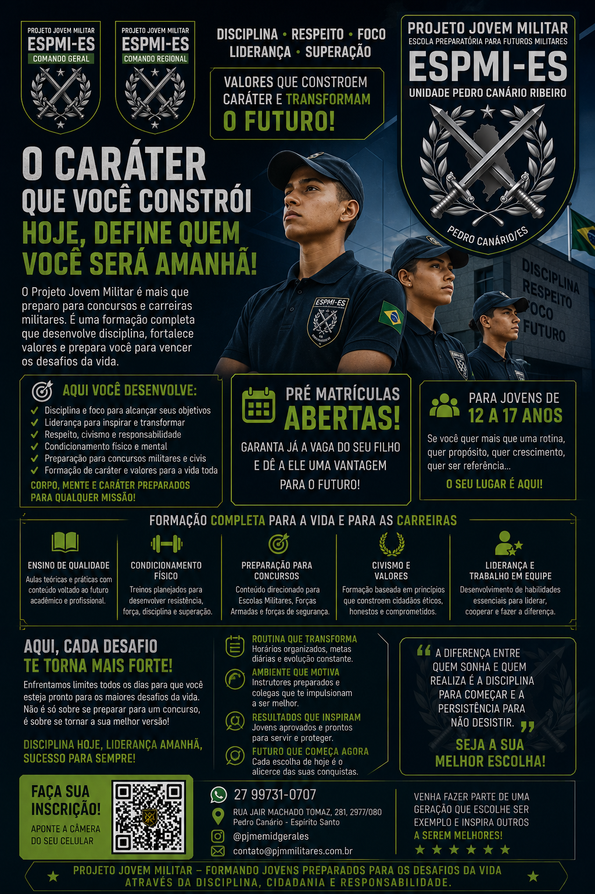

♜
DISCIPLINAPARA O PRESENTEDISCIPLINA • RESPEITO • FOCO • LIDERANÇA
DISCIPLINA HOJE,
GRANDES CONQUISTAS
AMANHÃ!
Formando jovens mais fortes para um Brasil melhor.
O Projeto Jovem Militar é uma escola preparatória que desenvolve disciplina, formação e cidadania, preparando jovens para os desafios da vida.

14+ANOS DE HISTÓRIA6.500+JOVENS ALCANÇADOS
Jovens
mais fortes
para um
Brasil melhor!
mais fortes
para um
Brasil melhor!
▣
FORMAÇÃOPARA A VIDA♟
CIDADANIAPARA UM FUTURO DE OPORTUNIDADES◎
FOCOEM RESULTADOS▥
DESENVOLVIMENTOPESSOAL⚑
RESPEITOE TRABALHO EM EQUIPESOBRE O PROJETO
O Projeto Jovem Militar é uma escola preparatória pré-militar do Espírito Santo, com o comando geral, que tem como missão desenvolver jovens mais conscientes, disciplinados, éticos e responsáveis, por meio de uma formação sólida baseada em valores, cidadania e respeito.
Mais do que um projeto, uma proposta de formação humana para preparar jovens para escolhas, desafios e oportunidades.
SAIBA MAIS ›“Mais que um projeto,
uma geração mais forte
para o Brasil.
uma geração mais forte
para o Brasil.
NOSSOS NÚMEROS
6.500+JOVENS
ALCANÇADOS
ALCANÇADOS
5UNIDADES
EM EXPANSÃO
EM EXPANSÃO
18MESES
POR CICLO
POR CICLO
100%FOCO EM
FORMAÇÃO
FORMAÇÃO
“Investir em jovens é
construir um futuro mais seguro.”
construir um futuro mais seguro.”
FORMAÇÃO E DESENVOLVIMENTO
Uma formação completa para a vida.
Cada atividade é planejada para transformar disciplina em hábito, experiência em competência e valores em atitudes.
Desenvolvimento pessoal
Autoconfiança, responsabilidade, autocontrole e resiliência.
Desenvolvimento social
Respeito, convivência, trabalho em equipe e liderança.
Educação e foco
Organização, planejamento, estudos e definição de metas.
Desenvolvimento físico
Atividades físicas, marchas, hábitos saudáveis e superação.
Valores e cidadania
Civismo, ética, responsabilidade e compromisso com o bem comum.
CAMINHOS PARA O FUTURO
Realize seu sonho.
Conheça referências de carreira e possibilidades de formação das Forças Armadas e Forças Auxiliares, sempre com finalidade educativa e de orientação.
EXÉRCITOFormação e carreira
MARINHAOrientação para o futuro
AERONÁUTICANovos desafios
FORÇAS AUXILIARESPossibilidades profissionais
DEPARTAMENTO PEDAGÓGICO
Educação que forma cidadãos.
01
Planejamento
Planos, materiais e organização das atividades.
02
Acompanhamento
Monitoramento e melhoria contínua.
03
Educadores
Formação e orientação das equipes.
04
Famílias
Integração com comunidade e parceiros.
UNIDADES
Onde estaremos.
Barra de São FranciscoConversas avançadas
ColatinaConversas avançadas
Pedro CanárioAutorizados e parceria com a Prefeitura
Conceição da BarraAutorizados e em movimentação
Teixeira de FreitasConversas avançadas
GALERIA
Identidade do Projeto Jovem Militar.

A MISSÃO COMEÇA AGORA
FAÇA PARTE DESSA MISSÃO!
DISCIPLINA ★ FORMAÇÃO ★ CIDADANIA
CONTATO
Fale com o Projeto Jovem Militar.
WHATSAPP(27) 99731-0707E-MAILpjmcmdgerales@gmail.comINSTAGRAM@pjmcmdgerales
BASE DE COMANDO INTERINAAvenida Coronel Mateus Cunha, 740 — Sernamby, São Mateus/ES